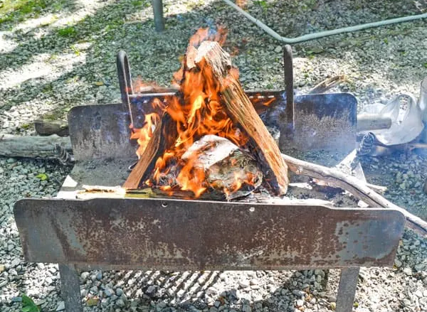

Campfire Nachos
A beloved happy hour classic, now being served at a campground near you. What better way to end the day
outside than with a cold beer, warm campfire, and a big pot full of cheesy nachos?
Equipment
- 4qt Dutch Oven
- Chimney Starter
- Dutch Oven Parchment Liners
Ingredients
- 1 tablespoon neutral flavored oil
- ½ lb tortilla chips
- 1 (7.75 oz) can El Pato hot tomato sauce, or equivalent
- 1 cup shredded Mexican cheese blend
- 1 (14.5 oz) can black beans, drained
- 1 large avocado, cubed
- 4-5 green onions, sliced
- handful of fresh cilantro, chopped
- 1 small lime, cut into wedges
Instructions
- Lightly oil the bottom of a large dutch oven, to prevent the nachos from sticking.
- For the first layer, evenly spread 1/3 of the chips into the dutch oven, topped with 1/4 can El Pato, 1/4 can
black beans, 1/4 cup cheese, and a handful of avocado, green onions, and cilantro. Repeat for the second
layer.
- For the third and final layer, use the remaining 1/3 portion of chips, 1/2 can El Pato, 1/2 can black beans, 1/2
cup cheese, and the remaining avocado, onion, and cilantro.
- Cover the dutch oven and place on a metal grill over your campfire for about 10 minutes, until the
cheese has melted.
- Serve with the lime wedges.
Roast Chicken
Roasted chicken never fails to impress, but it's surprisingly simple to make! This juicy roasted chicken recipe is perfect for beginner cooks and old pros alike.

Ingredients
- Whole chicken
- Oil
- Spices
- Heavy-duty foil
- Campfire
- Firewood
Instructions
- Remove the packaging and any innards from the chicken.
- Place the whole chicken on a large piece of foil.
- Cover the entire chicken with oil. For ease of application, we use olive oil spray.
- Cover the entire chicken with the spices of your choice. We used garlic salt, pepper, seasoning salt, and onion flakes. Be generous with the spices! We wish we had put more on our chicken.
- Wrap the foil tightly around the chicken.
- Wrap the chicken in an additional four or more layers of foil.
- Place in the campfire.
- Flip over the chicken after 15 minutes.
- Flip it again after another 15 minutes.
- Continue to tend to the fire flipping the chicken every 20-30 minutes.
- We had a small chicken and cooked it for a total of 2 hours.
- Cooking time will vary depending on the size of your chicken, but make sure it's cooked long enough. You may cut in to the chicken to make sure it's cooked or use a meat thermometer.
- Pull the chicken out of the fire and give the foil a few minutes to cool off.
- Unwrap the chicken and enjoy!
Chicken Pad Thai
This chicken pad thai is easy to make on either a one or two-burner camping stove. Make the pad thai sauce at home before your trip, or use store-bought sauce to keep things simple!
Ingredients
- 7 oz Pad Thai noodles
- 2 tablespoons sesame oil
- 1 large chicken breast, cut into cubes
- 1 small onion, diced
- ¼ teaspoon salt
- 2 eggs, beaten
- ⅔ cup Pad Thai sauce, store-bought, or see recipe below
- ½ cup sliced green onions
- ½ cup chopped cilantro
- ¼ cup chopped peanuts
Pad Thai Sauce
- 2 tablespoons soy sauce
- 2 tablespoons rice vinegar
- 2 tablespoons lime juice
- 2 tablespoons brown sugar
- 1 tablespoon chili-garlic sauce, or Sriracha
- 1 tablespoon fish sauce
Instructions
- Bring a pot of water to a boil. Once the water is boiling, turn off the heat and submerge the noodles for 8-10 minutes. Noodles are done when they are soft but “al dente.”
- Meanwhile, heat 2 tablespoons sesame oil (or regular vegetable oil if that’s what you’ve got) in a skillet over medium. Once hot, add the chicken, onions, and salt. Saute until the chicken is cooked through and the onions are starting to brown.
- Move the chicken to one side of the pan, lower the heat, then add the eggs to the skillet, stirring them frequently to scramble.
- Once the noodles are done (see step 1), the chicken is cooked through, and the eggs are scrambled, use tongs to lift the noodles out of their soaking water. Add noodles to the skillet, then pour in the pad thai sauce. Stir to coat the noodles.
- Top with green onions, fresh cilantro, and chopped peanuts. Enjoy!
Optional Step At Home (if you’re not using store bought pad thai sauce)
- Combine all the sauce ingredients in a small, sealable jar or bottle and shake to combine. Pack in your cooler.